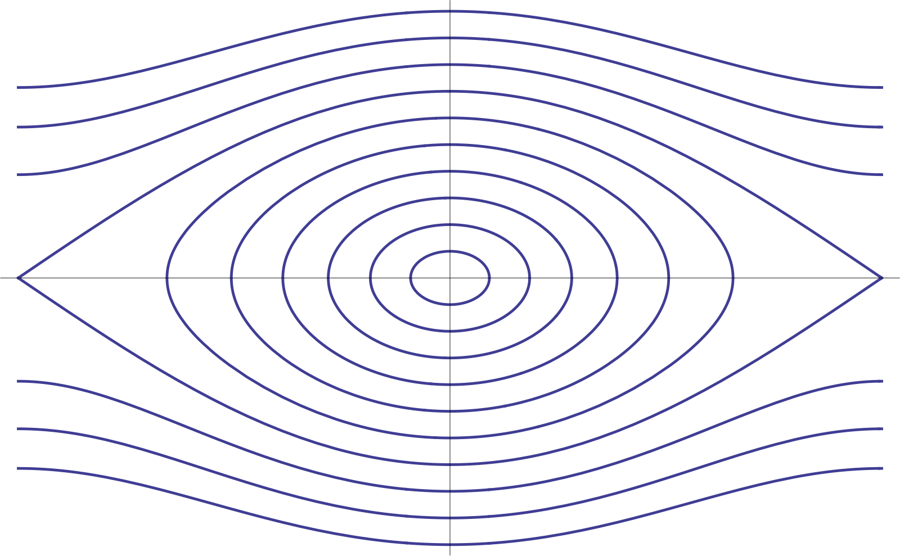
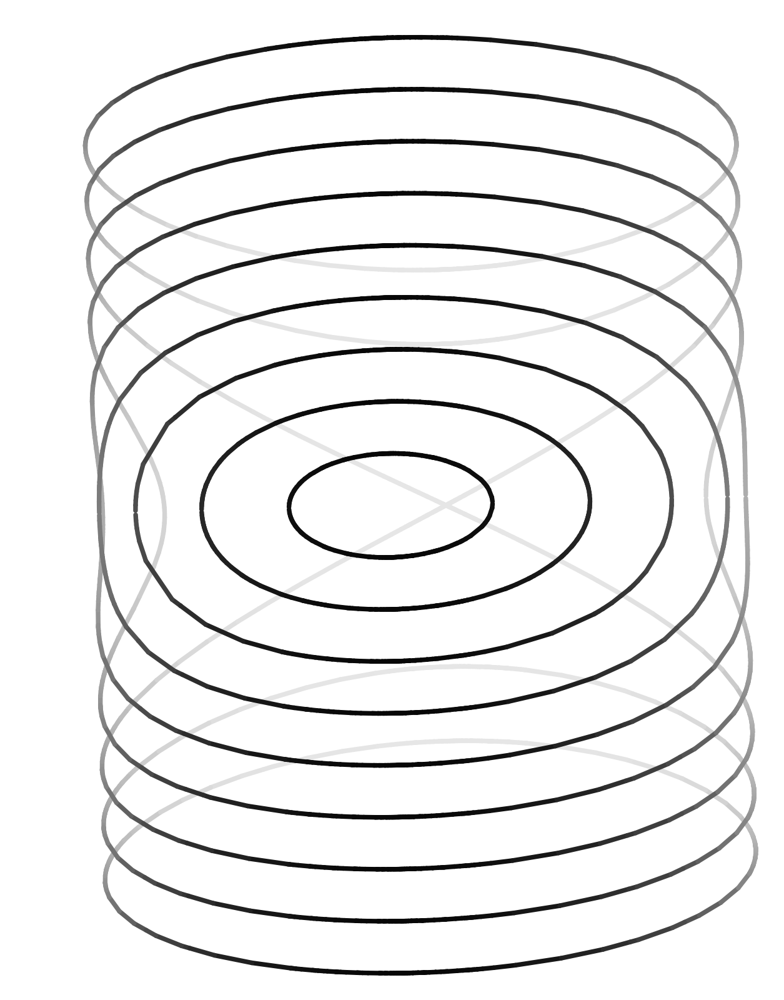

We derive the solution under the assumption that $\theta(0) = 0$, $\dot{\theta}(0)>0$. Let $\lambda=g/\ell$, so the equation becomes $\ddot{\theta}+\lambda \sin \theta=0$. Conservation of energy gives the equation
(to verify this, differentiate both sides). For reasons which will become clear soon, denote the integration constant on the right by $\lambda(2k^2-1)$, where $k\ge0$ and use the relation $\cos \theta = 1-2\sin^2\tfrac{\theta}{2}$. This brings (21) to the form
Note that this already makes it easy to plot the phase portrait (in the $\theta$-$\dot{\theta}$ plane, or wrapped around a cylinder, since adding multiples of $2\pi$ to $\theta$ does not change the physical state of the system); see Figure 5.


The relation between the parameter $k$ and the initial angular velocity $\dot{\theta}(0)$ is found by setting $t=0$ in (22), giving
It is also easy to see from the energy conservation equation (22) that the periodic solutions (which are the solutions for which $\theta$ remains bounded) correspond to $0<k<1$, and that in that case we have $k=\sin (\theta_{\textrm{max}}/2)$ where $\theta_{\textrm{max}}=\sup_{t\ge 0} \theta(t)$ is the maximal angle that the pendulum will reach (or approach asymptotically, in the case $\theta_{\textrm{max}}=\pi$). The equation (22) is a first-order ODE, and is in a form suitable for separation of variables; e.g., we can write
or (since we stipulated that $\theta(0)=0$)
From this point on, assume that $k<1$. Making the substitution $ku = \sin(\theta/2)$ in the integral on the left, we get the equivalent form
The integral on the left is related to a special function known as $\operatorname{sn}(u,k)$ (one of a family of special functions called the Jacobi elliptic functions), by
(meaning the inverse function of $\operatorname{sn}(u,k)$ as a function of $u$; the variable $k$ is thought of as a parameter, sometimes called the elliptic modulus). It follows that
so finally we get that
We have thus obtained our analytic solution, given by the rather intimidating formula